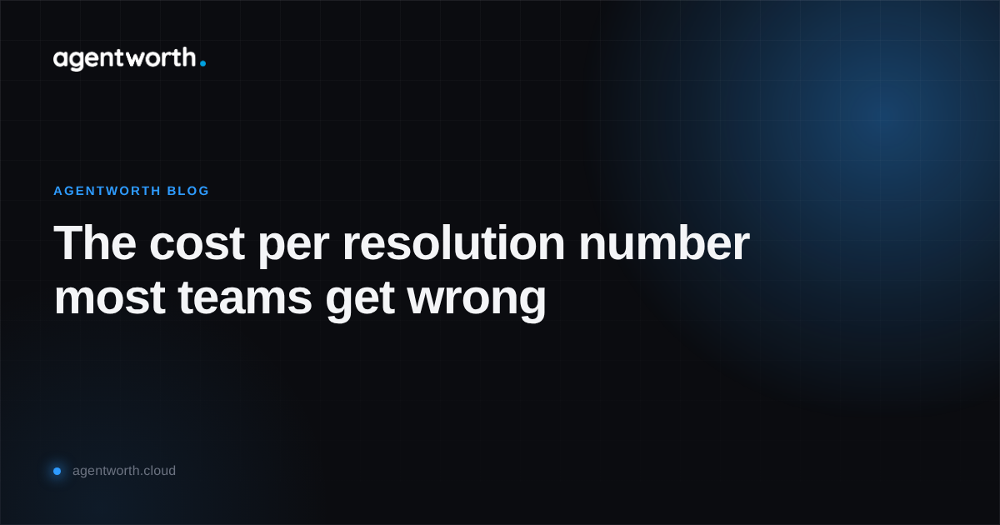

The cost per resolution number most teams get wrong

Ask most ops teams what their AI agent costs per resolution and they will give you a number fast. Take the monthly platform bill, divide by the number of tickets the agent closed, done. It feels rigorous because it has a denominator. It is also, almost every time, wrong in a way that flatters the agent.
The problem is not the math. It is what gets counted as a resolution in the first place.
The formula everyone starts with
Platform cost divided by tickets closed looks clean on a slide. It also assumes every closed ticket is a success, that a human handling the same case would cost some neat average figure pulled from an HR spreadsheet, and that closing the loop today is the end of the story. None of those three assumptions survive contact with real support data.
Where the number quietly breaks
First, "closed" is not "resolved." Plenty of agent platforms log a ticket as closed the moment the conversation ends, whether or not the customer's actual problem went away. If a meaningful share of those tickets come back within a few days under a new ticket number, the agent did not resolve them. It deferred them, at a cost nobody is tracking.
Second, the human comparison side is usually a guess. Teams reach for a company wide average handling cost per ticket, which buries huge variance between a one line password reset and a forty five minute billing dispute. If the agent is disproportionately picking up the easy cases, a flat average will overstate what it is saving, sometimes by a lot.
Third, the agent's own cost side is often undercounted too. The subscription fee is in there, but the token spend on longer conversations, the fallback calls to a larger model when the first attempt stalls, and the human escalation time when the agent hands off a case it could not finish rarely make it into the formula. A number missing costs on one side and inflating savings on the other is not a modeling error you can shrug off. It is two errors pointed the same direction.
What a trustworthy version actually requires
A defensible cost per resolution needs three things most dashboards never surface. It needs resolutions tracked long enough to see whether they held, so a reopened case can be pulled back out of the win column. It needs the human cost side built case by case, matched to the type of issue the agent actually handled, not a blended average. And it needs every real cost of running the agent counted, including the cases it escalated, since a handoff is a cost too, not a rounding error.
None of that is exotic. It is closer to how any other finance function would be expected to report a cost figure, with a record behind every number instead of an assumption standing in for one. The reason so few teams do it this way for AI agents specifically is that the data lives scattered across the agent platform, the ticketing system, and whatever spreadsheet someone built to bridge the two, and reconciling all three by hand every month is not a job anyone volunteers for twice.
That reconciliation is the actual product. agentworth pulls the agent's resolution data, tracks whether each case held or came back, prices the human alternative at the case level instead of a blended guess, and keeps the full trail so finance can check any number back to the cases behind it. The output is not a prettier cost per resolution chart. It is a cost per resolution figure you could defend in a budget meeting without changing the subject.
If you want to see what your own number looks like with the reopens and escalation costs put back in, try the free ROI calculator, or read the full ROI report for more on where these numbers tend to go wrong across the industry.